| ・ 春ですなぁ(H22.04.04) | |||
季節が変るごとに，キャンパスの立地が良いなぁと実感します．桜を観るなら，満開よりも八分咲きが， |
|||
|
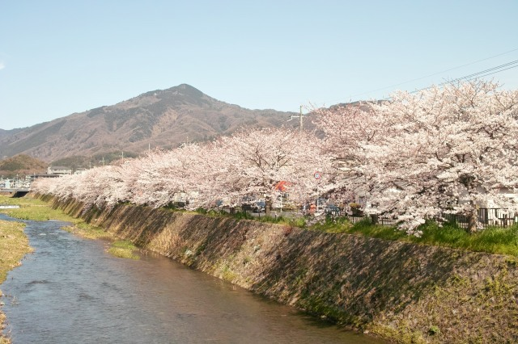
これで八分咲き，比叡山も映えます． |
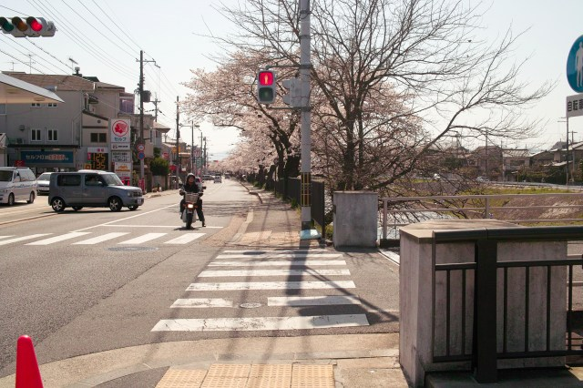
下流の方もまけてません． | ||
|
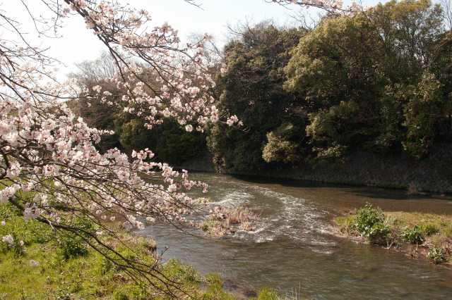
区役所ができるまでは地元の人で楽しめそうです． |
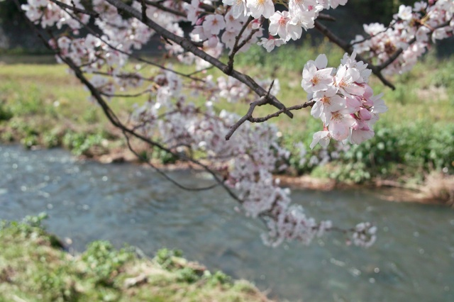
寄って観るのも良いですね． | ||
|
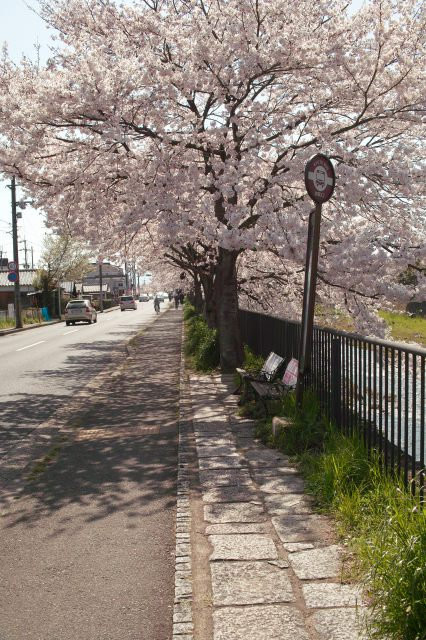
岩倉まで乗ってしまいそうです． |
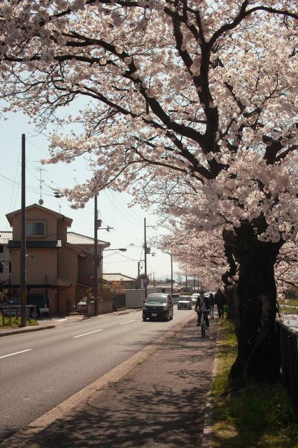
贅沢な通勤・通学路です． | ||
|
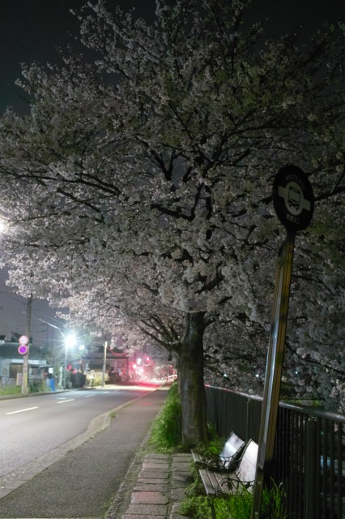
夜になるとまた雰囲気が変ります． |
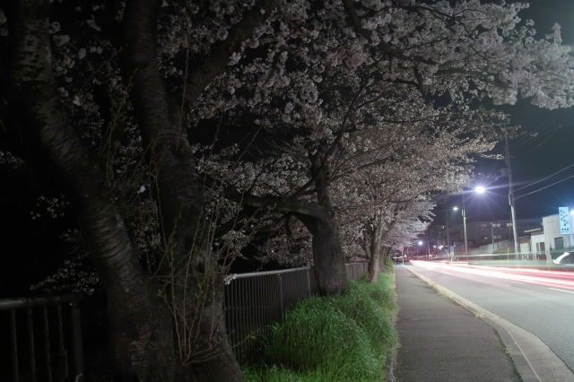
人通りも少ないので，ゆっくり楽しめます． | ||
|
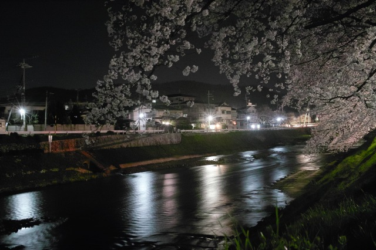
やっぱり夜はまだ冷えます． |
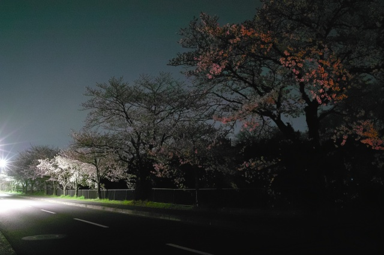
静かなものです． | ||
|
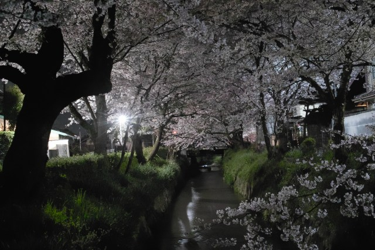
疎水に移動しても誰も居ませんね． |
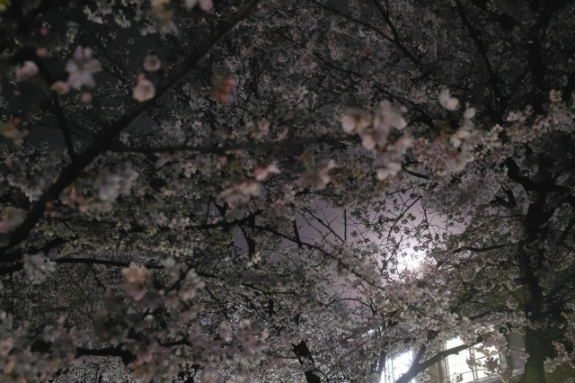
月明かりで透かしても，枝ぶりが密集して暗いです． | ||
|
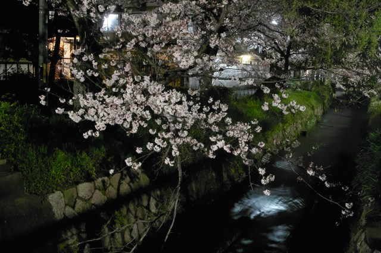
水流の音はなんとも静けさを強調します． |
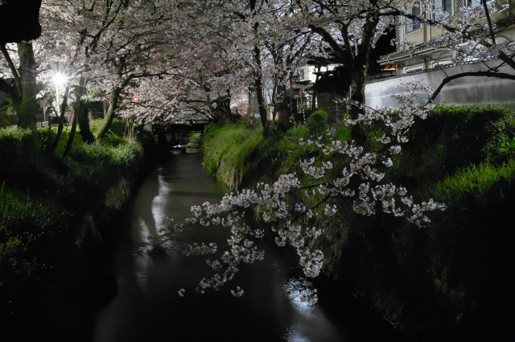
寒くなってきたので退散！ | ||